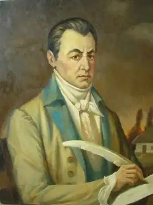
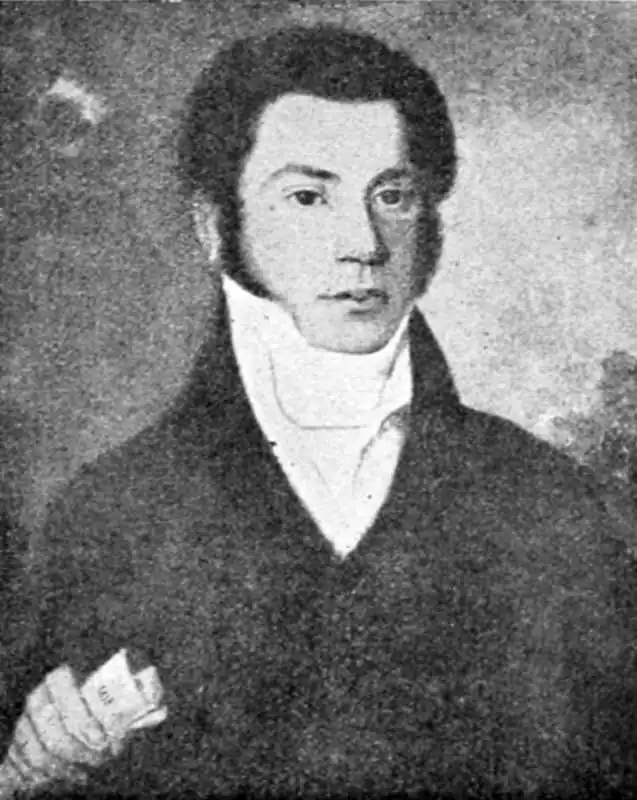

Котляревський Іван Петрович
(1769-1838)
письменник, драматург, перший класик нової української літератури Народився 9 вересня 1769 року в Полтаві, в родині дрібного чиновника. Згодом Котляревським було "пожалувано" дворянське звання. З 1780 року маленький Іванко почав навчатися в Полтавській духовній семінарії. Особливо старанно й наполегливо осягав хлопець гуманітарні дисципліни: піїтику, риторику, філософію, латинську, грецьку, французьку, німецьку мови. З інтересом знайомиться з античною літературою, перекладає Горація, Овідія, Вергілія. Відкриває для себе творчість Ломоносова, Кантемира, Сумарокова. Один із співучнів Котляревського згадував про поета, що той "мав пристрасть до віршування і вмів до будь-якого слова вправно добирати рими, дотепні і вдалі, за що товариші по семінарії прозвали його римачем". У 1789 році, після смерті батька, двадцятирічним юнаком він на останньому році навчання залишає семінарію і починає служити чиновником у полтавських канцеляріях, а згодом вчителює у поміщицьких родинах. "В цей період свого життя бував він на зібраннях та іграх народних і сам, переодягнений, брав участь у них, дуже уважно вслухався в народну розмову, записував пісні й слова, вивчав мову, характер, звичаї, обряди, вірування, перекази українців, наче готуючи себе до майбутньої праці…" Саме під час вчителювання, з 1794 р., й розпочинається творча робота письменника над славнозвісною "Енеїдою". Протягом 1794—1796 рр. І.Котляревський працює над першими трьома частинами поеми. З 1796 по 1808 р. І.Котляревський перебуває на військовій службі. У складі Сіверського полку, сформованого на базі українського козацького полку, брав участь у російсько-турецькій війні, особливо відзначившись у баталіях під Бендерами та Ізмаїлом. За відвагу й хоробрість І.Котляревського було відзначено кількома нагородами. Навіть у нелегких бойових буднях Іван Петрович продовжує працювати над "Енеїдою". Спочатку І.Котляревський не мав наміру публікувати поему, вона поширювалася серед читачів у рукописних копіях, але в 1798 році її видав у Петербурзі один із любителів українського слова, конотопський поміщик Максим Парпура. Згодом, у 1808 році, книговидавець І.Глазунов повторив це видання. Ці публікації робилися без відома і згоди автора, тому вийшли зі значними огріхами, які не могли задовольнити автора. У 1808 році в чині капітана І.Котляревський виходить у відставку і пробує влаштуватися на цивільну службу в північній столиці. У 1809 році з’являється друком його знаменита поема у чотирьох частинах "Вергилиева Энеида, на малороссийский язык переложенная И.Котляревским". На титулі містилося авторське зауваження: "Вновь исправленная и дополненная противу прежних изданий". З 1810 року і до кінця свого життя Іван Петрович Котляревський живе в Полтаві, працюючи наглядачем Будинку для виховання дітей бідних дворян — навчально-виховного закладу, в якому навчання відбувалося за програмою гімназії. З 1827 року — попечитель "богоугодних закладів" Полтави. На цьому відповідальному поприщі І.Котляревський зарекомендував себе як талановитий педагог і організатор освітнього процесу. Увесь цей час письменник не пориває з творчою діяльністю, захоплюється театральною справою. У 1818 році його призначають директором Полтавського театру. З метою збагачення репертуару він створює драму "Наталка Полтавка" і водевіль "Москаль-чарівник", які з успіхом було поставлено у 1819 році. Так, на полтавській сцені, з початків нової української драматургії зароджувався національний професійний театр. Стараннями І.Котляревського було випущено з кріпацтва М.Щепкіна, який згодом успішно виступав у п’єсах свого покровителя. У 1821 році поет закінчує писати поему, останню частину "Енеїди", але побачити повне видання йому не судилося. Воно з’явилося на світ у 1842 році, уже після смерті автора. У 1835 році за станом здоров’я І.Котляревський виходить у відставку, але не пориває з культурним життям того часу. До нього постійно зверталися за підтримкою і порадою представники найширших верств населення, і кожному він намагався надати необхідну допомогу. Тому з величезним сумом і болем було зустрінуто звістку про його смерть 10 листопада 1838 року. Творчість І.Котляревського ознаменувала собою початок нової ери української літератури. Із порівняно невеликого за обсягом творчого доробку письменника починається потужний рух національного відродження. Поема "Енеїда", над якою І.Котляревський працював майже три десятиліття, стала епохальним за своєю громадською і художньою значущістю явищем у духовному житті українського народу, визначила змістовий напрям і форму нашому письменництву. Життя і творчість І.Котляревського припали на час, коли, здавалося, самі підмурки національної ідеї відбували одне з найсерйозніших випробувань на право свого існування взагалі. Невблаганна самодержавницька дійсність розбивала на друзки сподівання українського народу. Могутній і тотальний імперський тиск мав остаточно привести до знищення навіть можливих проявів національного духу. Поневірянням, визиском, кров’ю вписано у літопис історії українського народу сторінки немилосердного XVIII сторіччя, яке, за справедливим визначенням П.Куліша, виявилося віком "расхищения национальной собственности всеми благовидными и неблаговидными способами". То був час, коли на історичному роздоріжжі народ міг втратити все — надії, традиції, культуру, майбутнє і, зрештою, себе. Стихійні протести щораз захлиналися під безжальною силою і жорстокою сваволею царських сатрапів. Набирало розмаху кріпацтво з його дикунською мораллю та антилюдськими законами. "Доборолась Україна до самого краю", — писав її геній Тарас Шевченко. І раптом серед мертвої тиші лунає сміх — зневажливий, саркастичний, життєствердний сміх. Той сміх пробудив у душах людей не тільки почуття гідності, але й повернув віру в себе, у свою неповторність і значущість. Мабуть, жоден народ у світі не наділяє такими повноваженнями своїх митців, як український. Особливо це стосується літераторів. Слово завжди було в особливій пошані у нашої громадськості, а тому письменники і поети сприймалися громадською думкою майже як пророки. Зрештою, осягаючи нашу історію і зупиняючись на реаліях сьогодення, ми переконуємося: в тому, що незалежна Україна відбулася, — найперша заслуга нашого письменництва. Отже, розглядаючи І.Котляревського лише як літератора, годі й думати про повноту сприйняття цієї суспільної постаті. Тільки мірки громадсько-літературні здатні реально показати його масштабність і значення. Т.Г.Шевченко лише двома рядками про свого великого попередника зумів передати його історичну вагу і значущість. І.П.Котляревський Всю славу козацьку, за словом єдиним, Переніс в убогу хату сироти. Уже сучасниками "Енеїда" сприймалася як своєрідна хрестоматія народного життя, панорама побуту і звичаїв. Вергілій писав свій твір у той час, коли в Римській державі замість республіки поступово і повно утвердилася імперія. Необмежена влада зосереджувалася в одних руках Октавіана Августа. Будучи натхненним прихильником такої форми управління і самого імператора, поет змальовує владу мало не як милість, освячену вищими силами, а самого Октавіана Августа — напівбогом, виводячи його рід від міфічного сина троянського царя Анхіса і богині кохання Венери — Енея, який, за легендою, нібито після зруйнування греками Трої вирушив до берегів Італії і заснував місто Рим. Вергілієва "Енеїда" мала надзвичайно успішне, якщо не тріумфальне літературне життя. Популярність і довголіття поеми пояснюється звеличенням і утвердженням абсолютизму, влади монарха, що знаходило гарячу підтримку європейської аристократії. "Енеїда" Вергілія на довгий час стала зразком класичного твору. І.П.Котляревський знав цей твір ще з семінарських часів у латинському оригіналі. Добре відома йому була і травестія М.Осипова та О.Котельницького "Вергилиева Энейда, вывороченная наизнанку". Опрацьовуючи сюжет свого твору, І.Котляревський узяв з поеми Вергілія лише основну сюжетну лінію та імена головних героїв. "Щоб до ладу зрозуміти, чого вартий Котляревський в історії громадського руху на Україні, повинні ми якнайбільшу увагу звернути на три моменти в його творчості, а саме: стосунки Котляревського до того грунту, на якому зародилась його діяльність, силу його свідомості і, нарешті, її наслідки та вплив на формування національної ідеї й руху на Україні. Характеристика цих моментів і дасть нам відповідь на питання про самостійність, свідомість та вплив Котляревського", — писав про основоположника нової української літератури С.Єфремов. Керуючись цим означенням, набагато простіше, зрештою, сприймати та осягати і славнозвісну поему нашого класика. Звісно ж, основним джерелом і натхнення, і поетичної матерії слугувала для митця тогочасна дійсність. Найважливіше ж те, що письменник поставив перед собою досі нечуване завдання — передати все новими творчими методами. Я музу кличу не такую: Веселу, гарну, молодую, — Старих нехай брика Пегас, — за таким дещо грубувато спрощеним підходом криється могутня ідея оновлення. До неї письменник приступив з добрими намірами, що в кінцевому результаті дало багатий ужинок творчих здобутків. Українські типи, реалії побуту, несподівані ситуативні ходи і позиції письменник передавав і відтворював з граничною щирістю і виразністю. Щедрий гумор лише доповнював образну завершеність героїв поеми. За міфологічною ширмою чітко проступають обриси тогочасного суспільства, сповненого несправедливостями життя. Національна ж особливiсть характеру українського народу — необорна волелюбність, що здатна стерти всі перешкоди на своєму шляху. Цією світлою ідеєю пройнято всю художню структуру "Енеїди". За словами О.Білецького, "сила і причина довговічності цього твору — в єдності авторського задуму і стилю. Ця єдність — у надзвичайно життєствердному, оптимістичному стихійно-реалістичному світовід-чутті, яким пройнято поему". Вона "стала першою друкованою пам’яткою української літератури, що немовби завершувала період довго— го "підспудного" життя і в той же час відкривала перспективи нового розвитку, і, незважаючи на свою комічну зовнішність, була серйозною за своїм громадським значенням".